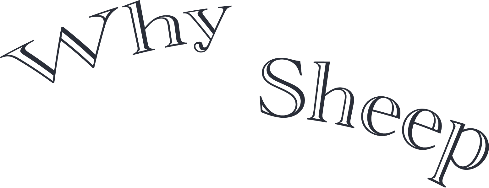
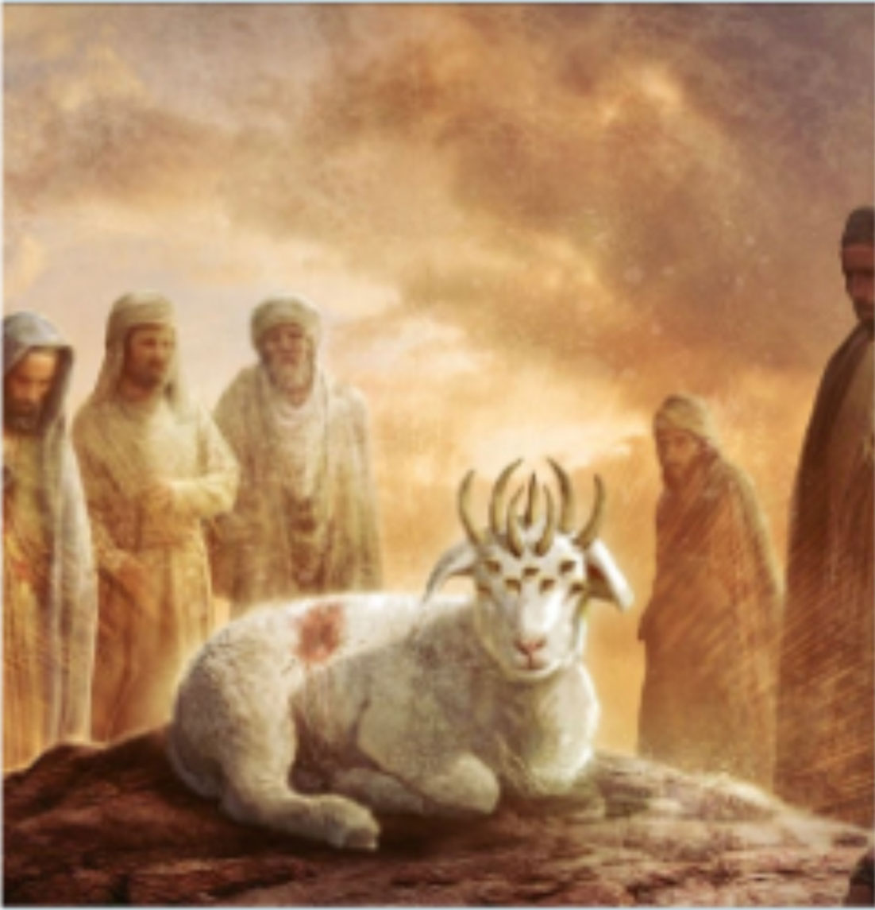
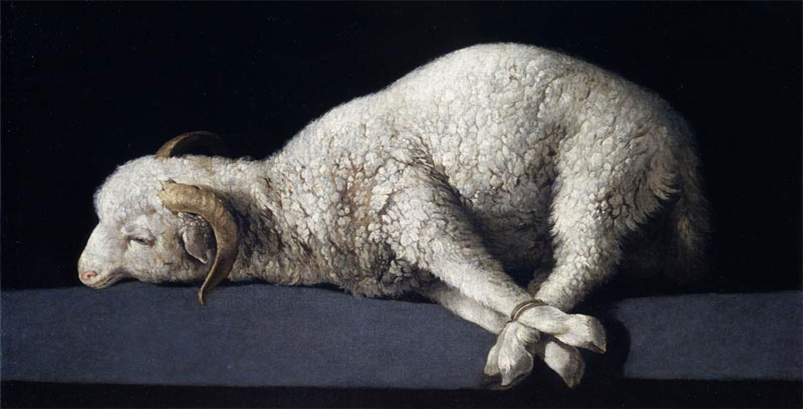
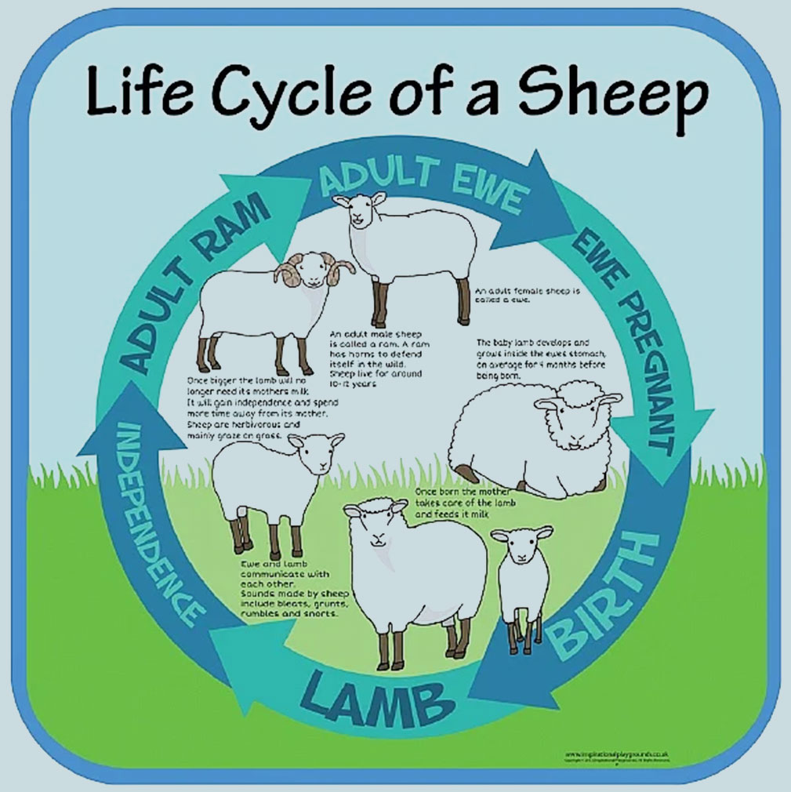
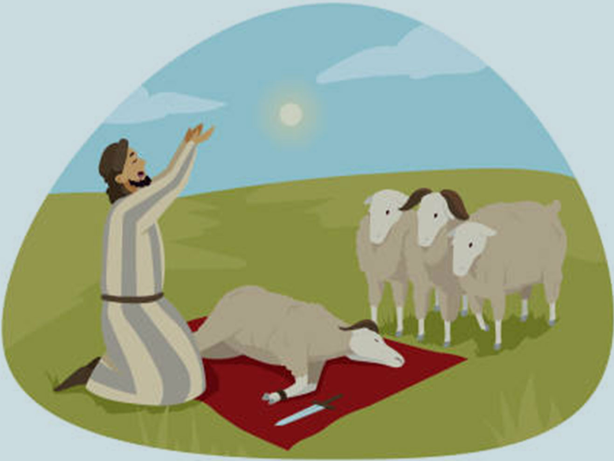

In Revelation, the Lamb is a significant symbol
representing Christ's authority and redemption.
In Revelation 5:6, the Lamb is depicted as having
been slain but standing before the throne of God.
This image emphasizes the story of Jesus Christ
sacrificing himself for the redemption of mankind.
In John 1:29, John the
Baptist refers to Jesus
as the "Lamb of God,"
indicating that He would
be the symbolic lamb
sacrificed for the sins of
humanity.
This concept suggests
that Jesus' sacrifice would
redeem the sins of the
world, allowing
reconciliation with God.


In nature, sheep represent the cycle of life.
Their reproduction and growth are linked
to the seasons and the cycles of nature.
Thus, the sacrifice of a sheep can symbolize
the continuous cycle of life, including birth,
growth, death, and rebirth.
Birth
lamb
independence
Eve Pregnant
adult ewe
adult ram
